Modes
Super Smash Bros Ultimate has lots to offer, and with that comes tons of modes. Story mode, online, special smash, and more! Look at the list below for more details!
| This mode is this game's meat and potatoes. Here, you can play stock battles, timed, or stamina! You can play with up to 8 fighters in a match! | Smash | 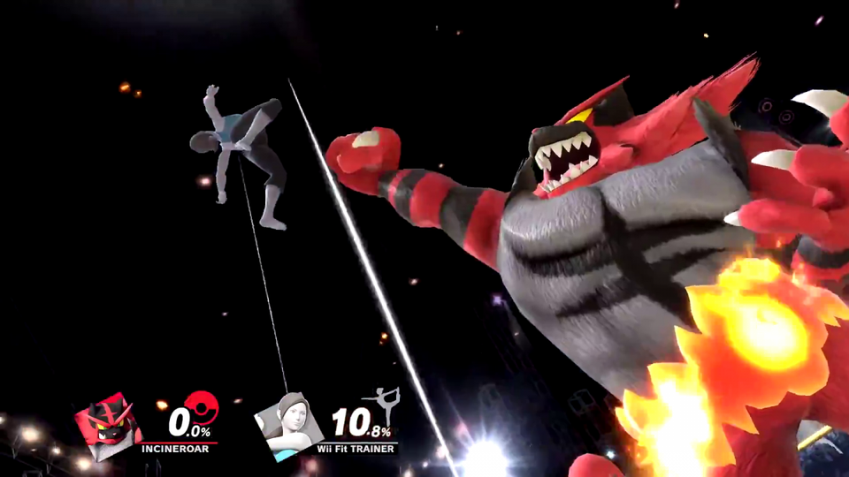 |
|---|---|---|
| 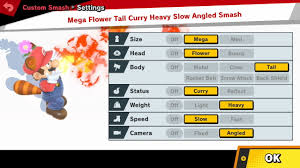 | Special Smash | Special Smash is just like normal smash, however you're able to bend the rules more! Make everyone big or metal, alter launch rates, and more! |
| Fight against up to 64 people in a giant tournament! As you move from match to match, losers will be eliminated until there is one fighter left! You can also play this mode online! | Tourney | 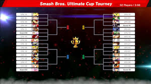 |
| 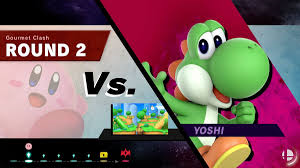 | Classic Mode | Classic Mode is a themed string of fights that differs from character to character. For an example, Kirby fights against characters who eat a lot, while Megaman fights characters most similar to the Robot Masters from his series! They all have a boss to fight, like the Cosmic Jester, Marx! |
| Have an itch to prove you're the best but no one's around? Jump online and knock some heads! You can even set your own prefered rule sets and the game will try to match you with people with the same rulesets! If you play well enough and win most your battles, you can unlock elite smash, which is reserved for the best of the best! | Online | 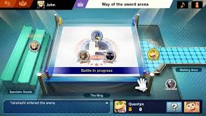 |
| 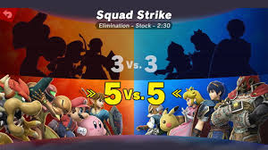 | Squad Strike | In this mode, you will pick either 3 or 5 different characters. The characters count as stocks, so as soon as your first choice is knocked out, you now take control of the next character! |
| Grab a baseball bat and launch Sandbag as far as physically possible! Remember how fighters get kocked farther depending on how much damage they've taken? Same rule applies to Sandbag! | Home-Run Contest | 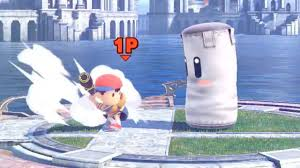 |
| 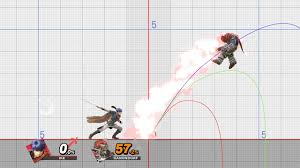 | Training | Nobody is born talented at anything, so it takes time and practice to perfect their skills. Luckily, you can do the same here in Training Mode! Be sure to experiment with those combos! |
| Here you can do plenty of things, ranging from shopping for items, to listening to your favorite songs! You can also check your saved replays here too! | Vault | 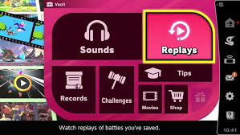 |
| 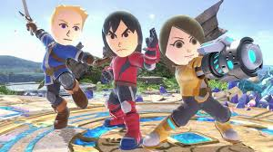 | Mii Fighters | Super Smash Bros allows you to customize plenty of aspects for mii fighters, like costumes or even different moves! Here is the place for you to do all of that and more! |
| Ever wanted to make your dream stage to fight on? You're in luck! Here, you can draw whatever shaped terrain you want! You can even choose different terrain types, make objects move, and more! | Stage Builder | 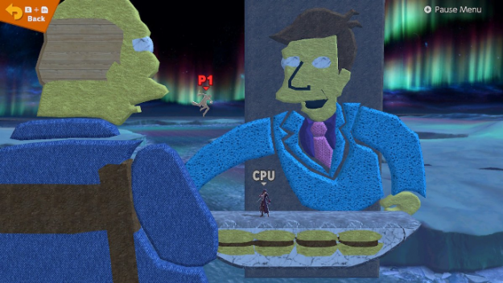 |
| 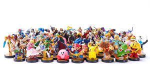 | Amiibo | Amiibo are small figurines that have an NFC chip on the bottom so you can scan them to use on different games! Here in Smash, you can train your own amiibo like a pokemon! |
| Mob Smash has a few different modes in of itself. Each one allows you to fight against hordes and hordes of fighters! Let's see how long you last! | Mob Smash | 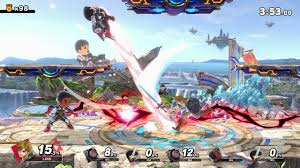 |
| 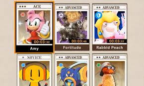 | Spirit Board | In Super Smash Bros Ultimate, a new concept called Spirits replaces the usual trophey hunting. They are characters and iconic pieces of the series featured. There are tons of spirits to collect from many different series! Gotta catch 'em all, right? |
| After collecting all those spirits just mentioned, you'd want to look at them right? Here's the place to do it. Here, you can also Find some exclusive spirits! | Collection | 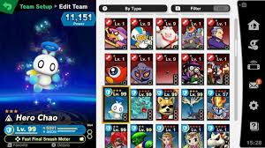 |
| 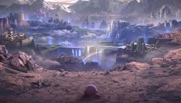 | World of Light | World of Light is this game's story mode. Rather than explaining it, the best way to understand it is by viewing the video below! |